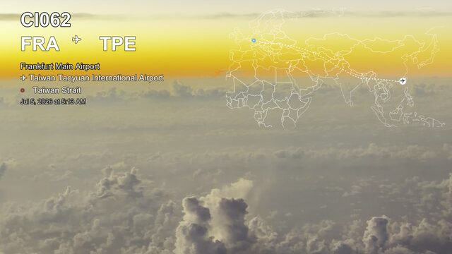
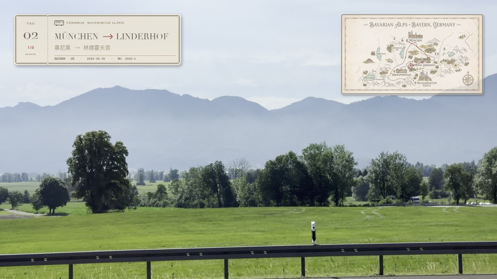
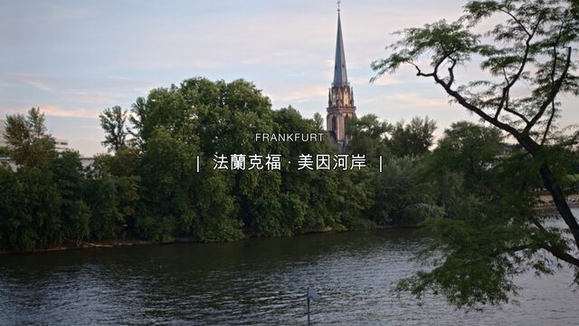

2026-07-05 · 版型庫（陸續新增／汰舊換新）
影片「描述標籤」＝疊在畫面上的透明 overlay（機票感航跡、景點地名…）。這頁純看樣挑款；實際要出時去 初剪規格選擇器 勾類別＋設定。描述標籤是初剪的一個分支，勾了才展開。

大標班次＋起迄站＋當前地點＋時間（資訊層）；白線稿世界地圖＋虛線航線＋交通圖示（地圖層）。兩層各自可出。

復古巴士票（左上）標起訖站＋票根 Day／段次；復古手繪地圖（右上）把該段路線畫上去、標記滑到終點針，標「車流到哪」。多段行程一段一張（起→訖），兩層都 70% 透明不擋畫面。實證：德國 day2 移動中（慕尼黑→林德霍夫→新天鵝堡→返程）。

英文小字寬字距 ＋「｜ 中文地名 ｜」細直線框，置中。乾淨編輯感（宮崎風）。
建築名＋風格＋年代，接歸檔的建築風格關鍵字（例「哥德式｜科隆大教堂」）。
地名＋座標＋日期，像護照蓋章。
店名／菜名，票根收據質感。